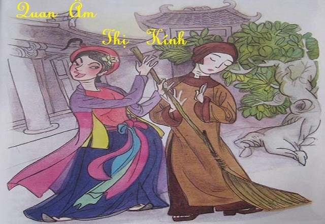

Ngày xưa có gia đình họ Mãng giàu có và danh giá, họ sinh được một người con gái rất xinh và bụ bẫm. Người mẹ thường khen con:
– Ồ, con gái của bố mẹ ngày càng xinh đẹp và dễ thương quá đi thôi…
Người cha nói:
– Gia đình ta thật là có phúc. Tôi đặt tên cho con là Thị Kính. Bà có đồng ý không?
– Còn gì hơn nữa chứ? Mong rằng con sẽ thành một thiếu nữ ngoan hiền, thờ cha kính mẹ và kính trên nhường dưới, phải không con?
Thị Kính lớn lên thành một thiếu nữ nết na xinh đẹp. Đến tuổi lấy chồng, bố mẹ gả nàng cho một người học trò họ Sùng, tên là Thiện Sĩ.
Về làm dâu bên nhà chồng, Thị Kính chăm lo canh cửi, bếp núc để nuôi chồng ăn học. Nàng thường nói với chồng để khích lệ chàng:
– Chàng siêng học thế kia, công danh đang chờ chàng phía trước. Thiếp rất hài lòng về chàng.
Nghe vậy, Thiện Sĩ gắng công học tập hòng đạt được công danh cho vui lòng vợ và rạng danh gia đình…
Hôm nọ, Thiện Sĩ đọc sách gần bên chỗ Thị Kính đang ngồi may áo. Được một lúc thì mệt quá nên chàng gục đầu xuống bàn thiu thiu ngủ. Thị Kính cố giữ yên lặng cho chồng ngon giấc. Nàng có thì giờ ngắm nghía kỹ khuôn mặt tuấn tú của chồng, chợt Thị Kính nhìn thấy nơi má của chồng có một sợi râu mọc ngược. Nàng thầm nghĩ:
– Sợi râu này sao mọc kỳ lạ thế nhỉ? Người ta bảo râu mọc ngược là tướng bạc ác, ta phải cắt bỏ giùm chàng thôi!
Thị Kính liền lấy kéo trong rổ may cúi xuống định cắt sợi râu.
Vừa đúng lúc ấy thì Thiện Sĩ cũng chợt choàng tỉnh, thấy vợ cầm kéo kề sát bên mình thì thảng thốt kêu lên:
– Ớ… ớ, nàng làm gì kỳ vậy? Nàng định giết ta trong lúc ta đang ngủ ư?
Thị Kính cười, giải thích:
– Không phải đâu, thấy chàng có sợi râu mọc ngược nên thiếp định cắt đi…
Chẳng ngờ Thiện sĩ chưa tỉnh ngủ hẳn, trong cơn nghi ngờ và hoảng hốt, nhất định không chịu tin như vậy, cứ việc tri hô ầm lên:
– Đừng có chống chế nữa! Ác phụ mưu giết chồng! Bớ người ta!…
Mẹ chồng Thiện Sĩ nghe hô hoán thì thất kinh chạy vào la lớn:
– Việc gì vậy? Việc gì vậy?
Nghe thoáng qua câu chuyện con trai mình kể, tức thì bà tru tréo lên:
– Trời ơi! Con ác phụ kia! Mày định giết chồng để lấy chồng khác giàu có hơn hay sao? Phải mà! Mày thấy nhà tao nghèo mày khinh… mày bày mưu ác độc phải không?
Mặc cho Thị Kính hết lời phân trần, cả nhà Thiện Sĩ xúm lại đổ hết tội lỗi lên đầu nàng. Người mẹ chồng nói:
– Báo quan đóng gông nó cho xong!
Còn người cha chồng thì bảo:
– Đuổi nó về nhà cha mẹ nó!
Thị Kính biết là không thể minh oan được, nàng vừa khóc vừa nói:
– Con đã thực lòng trình bày như thế mà cha mẹ không chịu nghe cho, thôi thì con đành chịu vậy… Nếu cha mẹ đã đuổi, thì con xin ra đi!
Thị Kính đau đớn khăn gói lầm lũi ra khỏi nhà chồng. Nước mắt chan hòa, nàng vừa khóc vừa nghĩ:
– Sự thể đã như thế này rồi thì còn mặt mũi nào về lại nhà cha mẹ mình nữa… Hu… hu… hu…
Buồn chán cho số phận éo le và để cho tiện việc đi lại một mình, Thị Kính liền cải trang thành đàn ông đi ra khỏi tỉnh nhà, lòng nhủ thầm:
– Ta sẽ đi thật xa rồi xuất gia đầu Phật cho hết kiếp này thôi! Ôi, cuộc đời đúng là bể khổ trầm luân.
Thị Kính cứ đi mãi, cố tìm một nơi trú ngụ cho thật xa quê nhà để xóa bỏ những ký ức đau xót. Hôm nọ, khi đi ngang qua chùa Vân trên khu đồi vắng, nàng thấy cảnh chùa yên tịnh nên rất vừa lòng:
– Mình gởi thân tu hành nơi đây cho xong kiếp người…
Thị Kính bèn xin vào bái sư phụ để được xuất gia đầu Phật:
– Xin sư phụ nhận con là đệ tử!
Sư cụ không biết nàng là gái, thấy Thị Kính hiền lành và tỏ lòng mộ đạo nên nhận cho làm chú tiểu và đặt hiệu là Kính Tâm. Sư cụ giải thích cho nàng biết:
– Kính Tâm là thành kính giữ gìn tâm đạo, con hãy nhớ điều này!
Thế là nguyện vọng đã đạt, Kính Tâm dốc chí tu hành. Nàng cho rằng sự đời đã tắt lửa lòng, nên tối sáng đều yên tâm làm bạn cùng kinh kệ, một lòng hướng về Đức Phật cho quên nỗi trầm luân.
Nhưng tu hành ở chùa Vân chưa được bao lâu thì một sự việc mới lại xảy đến với nàng.Một hôm chùa Vân mở hội chay, ra thông báo cho dân trong vùng biết. Mọi người nô nức đến xem chùa khai trai đàn. Phật tử quanh vùng nô nức kéo về chùa dự hội rất đông…
Trong số người lễ chùa có cô Thị Mầu, là con gái của một phú hộ trong vùng, tính tình rất lẳng lơ. Cô ta thầm nhủ trong lòng:
– Hì hì…! Đi dự lễ biết đâu lại tìm được một anh tình nhân thì hay biết mấy!
Thị Mầu đi một vòng quanh chùa, vô tình trông thấy sư Kính Tâm, Cô ta khen:
– Ôi! Ông thầy chùa này sao đẹp trai quá chừng!
Cô ả bèn sinh lòng gian tà:
– Sao trên đời có người ngu như vậy chứ! Đẹp trai như vậy mà đi tu thì uổng quá! Mặc kệ! Chùa thì chùa! Sư thì sư! Bà phải ghẹo cho bằng được mới thỏa lòng mình.
Thế là Thị Mầu liền đi theo, buông lời ve vãn:
– Thầy ơi! Xin thầy đoái nhìn đệ tử nè! Đệ tử thành tâm, hết lòng với thầy mà…
Sư Kính Tâm nghiêm mặt lại đáp:
– Mô Phật! Tôi xuất gia giữ giới thanh tịnh, xin nữ thí chủ đừng cợt nhã nữa!
Nhưng Thị Mầu càng say mê hơn, õng ẹo níu kéo Kính Tâm:
– Chàng ơi! Xin đừng bỏ thiếp… Thiếp thật lòng yêu chàng mà!
Kính Tâm bực tức bỏ vào chùa, miệng lâm râm khấn vái:
– Nam Mô A Di Đà Phật! Nam Mô A Di Đà Phật!
Thị Mầu tẽn tò, bèn sinh lòng tức giận:
– Được! Ta có lòng thương mà bày đặt làm cao, rồi có ngày ngươi sẽ hối hận.
Lửa lòng bừng cháy, Thị Mầu không biết tìm ai bèn về tư thông với người tớ trai trong nhà. Vài tháng sau, cha mẹ Thị Mầu phát hiện ra con mình đã mang thai, bà khóc lóc nói:
– Trời ơi! Con gái chửa hoang! Nhục nhã quá, trời ơi là trời!
– Mi lỡ trót dại với ai thì nói ngay? Thú tội đi! Để tao còn xin làng xin nước chạy tội cho mi!
Thị Mầu đã có chủ ý trước nên cố tình dựng chuyện:
– Thưa cha mẹ, con lỡ trót dại với sư Kính Tâm ở chùa Vân.
Nghe chuyện động trời như vậy, người cha hốt hoảng kêu lên:
– Sư Kính Tâm hả? Trời ơi là trời! Thôi được rồi…
Sợ rằng con gái chửa hoang sẽ bị làng phạt vạ, cha mẹ Thị Mầu lập tức đưa sự việc ra trình báo với lý trưởng, cứ đổ riệt cho Kính Tâm:
– Tên nhà sư hư đốn ấy đã dụ dỗ con gái tôi. Bây giờ nó đang mang thai, xin quan làng xét xử cho.
Ngay lập tức, Lý trưởng sai quân đinh trong làng đến chùa Vân bắt Kính Tâm ra tra khảo. Vốn là người có tính nhẫn nhịn, nên mặc dù bị đánh tơi tả, sư Kính Tâm vẫn cắn răng chịu đòn, không để lộ thân thế mình là gái. Miệng luôn gọi:
– Nam Mô Nhẫn nhục Vương Bồ Tát! Nam Mô Nhẫn nhục Vương Bồ Tát!
Bọn quân binh trong làng vẫn không hề nao núng, đánh đập nàng không chút nương tay. Sư cụ thấy sự nhẫn nhục của Kính Tâm thì động lòng thương, đứng ra xin làng:
– Cho tôi xin đóng tiền phạt vạ, mong làng tha cho Sư Kính Tâm làm phước!
Nhờ vậy mà Kính Tâm được tha, không còn bị đòn đau. Nhưng cũng từ đó, sợ miệng thế mai mỉa, ô danh chốn thiền môn, nên sư cụ đành phải bảo:
– Vì con đã phạm giới cấm, nên con phải ra ngoài thôi, không còn tu hành trong chùa được nữa!
Kính Tâm đành dứt áo rời khỏi chùa Vân, bây giờ trở lại với cái tên Thị Kính, nàng đau khổ cất túp lều dưới chân núi sống qua ngày, cam tâm chấp nhận sự hành hạ này, cắn răng không hề một lời van xin hay than thở. Thị Kính luôn luôn nhủ thầm với lòng mình:
– Dù ở xa chùa, ta vẫn quyết tu hành cho trọn đạo!
Mặc dù ở nơi xa xôi, nhưng nàng vẫn ngày ngày siêng năng kinh nguyện, tu tâm như khi còn là sư:
– Ta thề kiếp này còn sống được ngày nào thì ngày ấy phải cố theo bước Phật Như Lai đến cùng! Xin Đức Phật từ bi phù hộ cho con.
Sự đời đến thế vẫn chưa yên. Vài tháng sau, Thị Mầu sinh được một đứa con trai. Đã trót đổ vấy cho Kính Tâm, nên cô ả chẳng hề biết mắc cỡ hoặc thương con là gì, hối hả đem con mình đến túp lều giao cho Thị Kính:
– Đây là con của người, tôi trả lại cho người đó!
Thị Kính chẳng biết làm sao hơn vì sợ lộ tông tích của mình. Hơn nữa, sợ Thị Mầu bỏ rơi đứa trẻ vô tội kia giữa đường khiến nó chết đi thì hối hận không kịp, do vậy mà nàng đành phải nhận nuôi đứa bé và khuyên Thị Mầu:
– Mô Phật! Xin nữ thí chủ đừng thù hận sân si làm chi nữa! Hãy cố mà về tu tâm dưỡng tánh.
Từ đó, Thị Kính đưa đứa bé vào lều sống chung với mình, ngày ngày bồng đứa bé ra đầu làng cuối xóm để xin sữa, Ai đi ngang qua cũng cười chế giễu:
– Tu hành mà không nên nết! Hư thân đến thế là cùng!
Mặc cho dân làng kẻ cười người chê đến rát cả mặt, nàng vẫn âm thầm chịu đựng, nhẫn nhịn im lặng và lòng luôn tâm niệm:
– Chư Phật đã dạy, người tu hành phải biết nhẫn nhục!
Ngày qua ngày, Thị Kính vẫn không một lời oán than, cam tâm cho số phận. Cứ thế mà sáu năm dần trôi qua, nàng trông nom con của người như con mình, nên đứa bé rất khỏe mạnh và sống vui vẻ bên nàng. Trong khi đứa bé ngày một nhởn nhơ khôn lớn, thì trái lại, sức lực của nàng ngày càng mỏi mòn kiệt quệ. Cho đến một hôm kia, Thị Kính lâm trọng bệnh. Biết mình không thể sống lâu hơn được nữa, nàng gọi đứa bé lại bên mình rồi gắng gượng viết một bức thư kể rõ đầu đuôi ngọn ngành sự việc cho cha mẹ ruột của mình biết những chuyện bấy lâu nay, lòng thầm nghĩ:
– Cha mẹ mà biết được nguồn cơn này chắc sẽ hết buồn lòng. Còn đứa bé thì mình giao cho sư cụ nuôi. Chắc sư cụ cũng không nỡ từ chối!
Viết xong thư là lúc tàn hơi, Thị Kính dặn dò đứa bé sau khi mình chết thì trao thư lại cho sư cụ trên chùa, nhờ sư cụ trao lại cho cha mẹ nàng. Sau đó, nàng an nhiên nhắm mắt qua đời trong sự thanh thản của tâm hồn. Đứa bé đứng bên nàng khóc lóc vô cùng thảm thiết, rồi vì chỉ có một mình trong túp lều nhỏ cô quạnh, nên nó vội vã chạy vào làng báo tin cho mọi người. Hay tin nàng mất, người trong xóm xúm lại khâm liệm nàng, nhờ vậy mà họ mới phát giác ra một điều khủng khiếp:
– Trời ơi! Sư Kính Tâm là đàn bà! Lạy Phật! Thì ra sư bị oan bao lâu nay mà chúng ta không hề hay biết!
Ai nấy đều nhận thấy rằng, sự chịu đựng của nàng từ bấy đến nay quả là cùng cực, không bút nào tả xiết. Sư cụ biết được mọi chuyện thì nước mắt tuôn trào, ông luôn miệng khóc than:
– Đệ tử ơi! Thầy đã đuổi lầm con! Lòng nhẫn nhục của con không thua gì chư vị Bồ Tát! Đức từ bi của con lớn như núi Tu Di. Xin con hãy tha thứ cho thầy…
Sư cụ tổ chức trai đàn cầu siêu cho Thị Kính. Làng bắt Thị Mầu phải chịu hết mọi trách nhiệm về việc này, cô ta phải lo ma chay cho Thị Kính. Đang lúc sư cụ niệm hương khai đàn thì Đức Phật Thiên Tôn hiện ra trên mây truyền phán:
– Thị Kính tu thành chánh quả, nay được phong thành Phật Bà Quan Âm.
Từ đó về sau, mỗi khi chỉ nỗi oan lớn nào đó thì người ta thường nói là “Oan Thị Kính” để nhớ đến câu chuyện này.